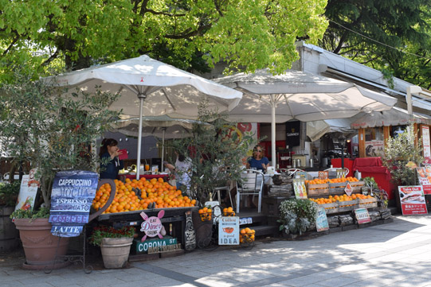
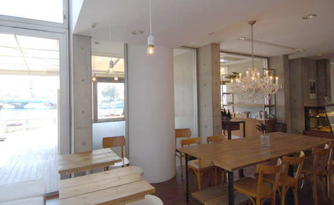
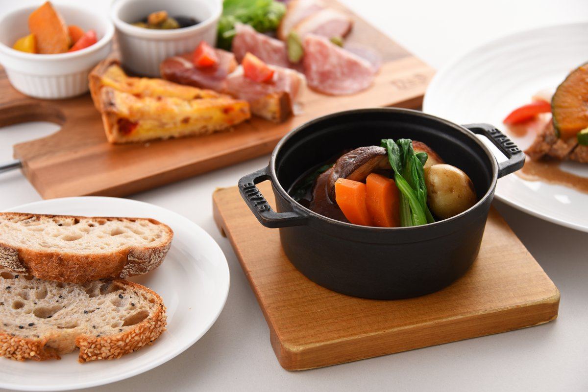
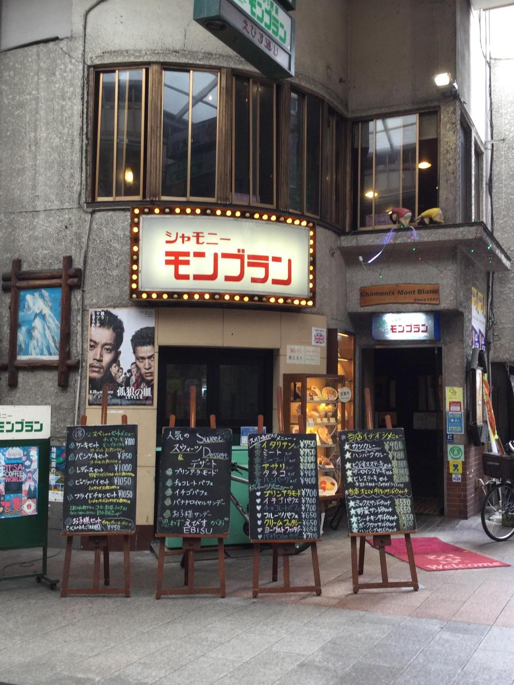
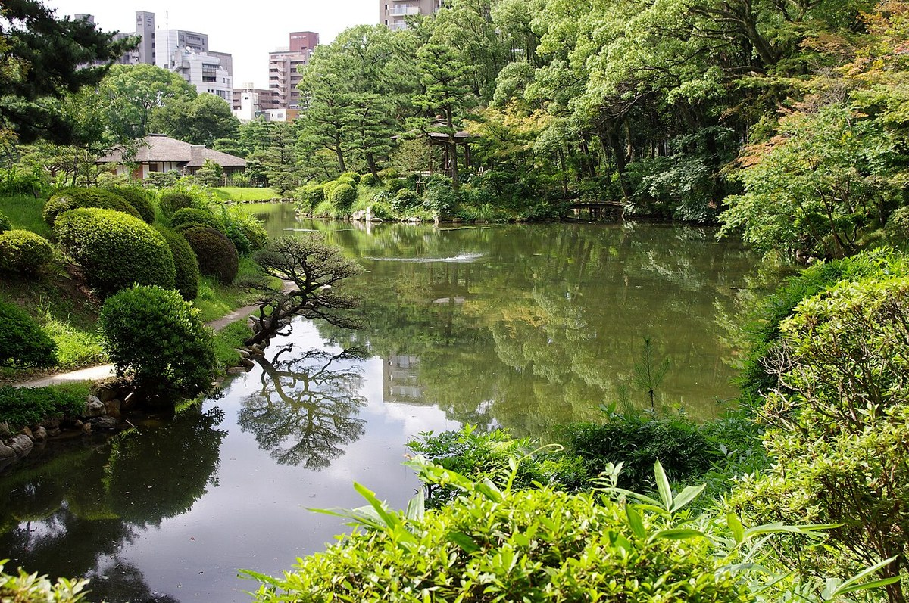
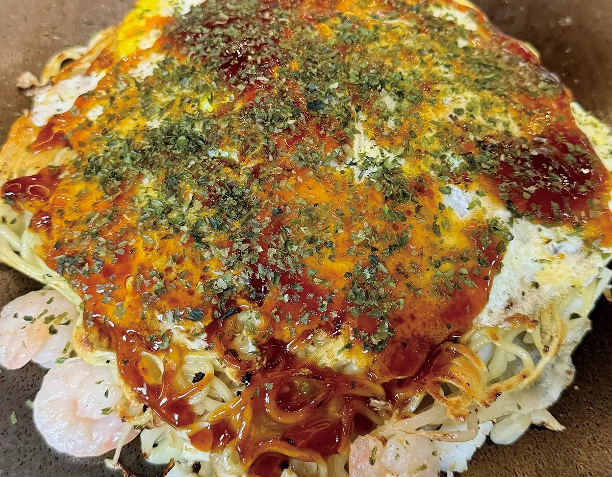
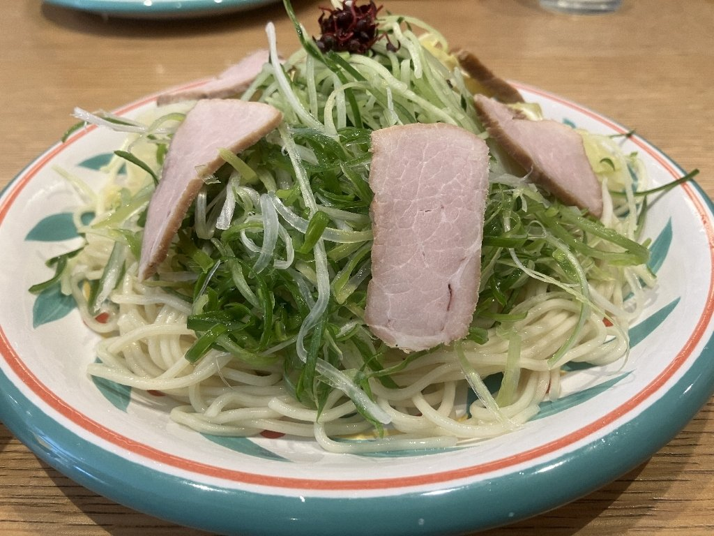
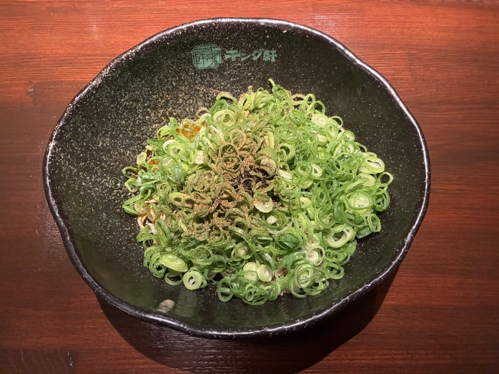
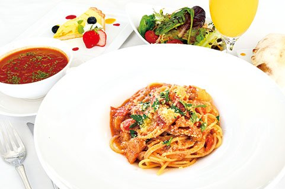
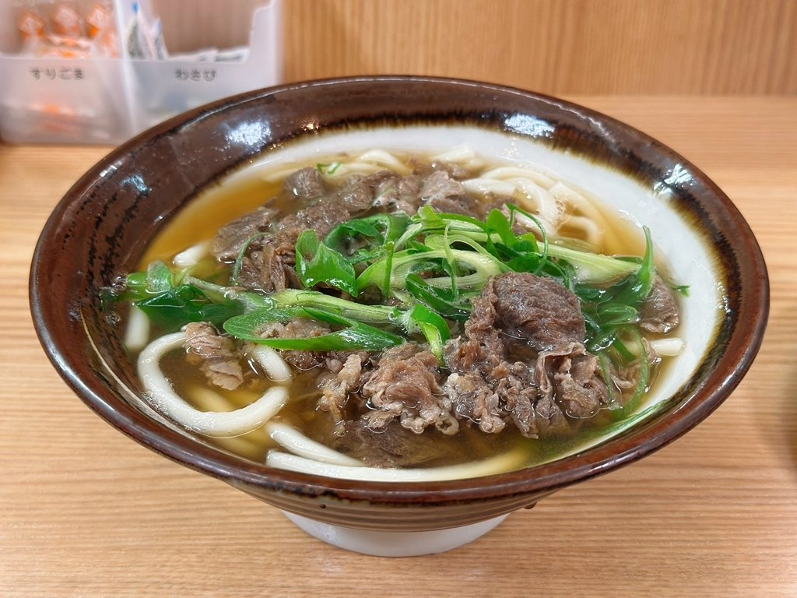

1
朝
起床・出発
Hotel HAGOROMO（中区羽衣町6-5）203号室
2日目のスタートはホテルから。ゆりっぺは前夜に金沢から移動し、のぞみ53号で21:02に広島駅へ到着して合流済み。今日のゴールは広島グリーンアリーナのBUMP OF CHICKEN（開場17:00／開演18:00）。午前は市内をまったり観光（平和記念資料館→原爆ドーム→縮景園）、午後は紙屋町でランチと物販→開演の流れ。長旅の疲れを考えて遠出はしない日にした。
朝
モーニング
朝ごはん候補
ホテルから歩いて行ける6軒（土曜モーニング）
晴れの朝は川辺の散歩がてらモーニングへ。元安川と京橋川の川沿いの店を優先に選んだ。いちばん近い店でもホテルから徒歩約20分。早めの出発がおすすめ。

川辺カフェ／イタリアンCaffe Ponte（カフェ ポンテ）元安川の河岸緑地にあるオープンカフェ。白いパラソルのテラス席から川と平和公園を眺めてモーニング（8:00–11:00、セット ¥1,100〜）。生搾りオレンジジュースも名物。ホテルから徒歩約25分で資料館の目の前公園内カフェピアノカフェ（レストハウス2F）被爆建物のレストハウス2階にある喫茶ホール。窓から元安川と公園の緑を眺めながらコーヒーと軽食を。被爆ピアノの展示もある。ホテルから徒歩約20分
川辺カフェFLEX Cafe Chatty リバーサイド京橋川に面したホテルフレックス1Fのテラスカフェ。デリカフェモーニング ¥1,100はフリードリンク付き。水曜定休。縮景園から徒歩約5分でホテルからは徒歩約40分と遠め喫茶チェーンコメダ珈琲店 広島大手町店朝7時から開く安心枠。開店から11:00まではドリンク注文で焼きたてトーストが無料になるモーニング。ホテルから徒歩約20分
ベーカリー／レストラン広島アンデルセン被爆建物の老舗ベーカリー。土日祝は2Fレストランが7:30から開いてモーニング営業。1Fのサンドイッチスタンドも7:30から。ホテルから徒歩約25分
純喫茶シャモニーモンブラン 本店創業1952年の老舗純喫茶。モーニング（8:00–11:00）はトースト・ゆで卵・ハム・ポテトサラダ・みそ汁まで付いて ¥600。ホテルから徒歩約30分2
3

4
散策
縮景園
縮景園
9:00–17:00。ちょうど紅葉シーズンの庭園をゆっくり散策。このあとは紙屋町でランチ。

広島城の天守は2026年3月に閉城したため外観のみ。会場のグリーンアリーナと同じ基町エリアで、午後の移動は最小限。
昼
ランチ
ランチ
紙屋町・本通・平和公園周辺の6軒（土曜ランチ）

お好み焼きみっちゃん いせや 紙屋町本店元祖広島流。スペシャルそば肉玉 ¥1,980、ボリューム満点
広島つけ麺冷めん家 大手町店元祖の流れを汲む広島冷麺（つけ麺）。辛さ調整可、昼のみ営業
汁なし担担麺汁なし担担麺専門 キング軒 本通店広島式汁なし担担麺 並盛 ¥770。30回混ぜて食べるのが流儀
カフェランチ／イタリアンCaff'e Ponte ITALIANO（カフェ ポンテ）平和公園対岸の川辺テラスカフェ。ランチセットありベーカリーカフェ／洋食広島アンデルセン（2F アンデルセンキッチン）被爆建物の老舗ベーカリー2F。焼きたてパンと洋食ランチ、105席でゆったり
うどんちから 本通四丁目店広島のソウルフード的うどん店。肉うどん ¥820と最安枠、名物おはぎも5

6
整理券の枠
物販
広島グリーンアリーナ 物販ブース
物販はLINE「mogily」のデジタル整理券制。当選したのはゆりっぺの整理券のみなので、ゆりっぺが1人で入場して購入し、ユウキは外で待つ形。
整理券の時間枠は未定。枠の時間に合わせて前後の予定（ランチ・時間つぶし）を調整する。マイバッグ持参（袋の配布なし）。整理券があっても在庫の保証はないので、買うものは優先順位をつけてゆりっぺに渡しておく。
7

8
17:00／18:00
開場・開演
広島グリーンアリーナ
開場17:00、開演18:00。最寄りの原爆ドーム前／紙屋町西から徒歩約10分。BUMP OF CHICKENのライブを楽しむ。